We are building a one-of-a-kind, data-driven platform that can provide the whole-systems, integrated model that is necessary to describe and explain the place that Rural inhabits within the broader social and economic fabric of the United States. The ultimate goal of those efforts is to energize and guide local ingenuity and leadership within rural communities as they confront the overwhelming organizational challenges involved in the development of an emerging local tech economy. This synthesis has the potential to substantially shift the cultural, intellectual and material/capital contributions of rural people living in rural places.
As the Mapping and Data Analytics team, we are responsible for the foundational data and methodology that underlies any explanatory model that is produced or data product that is delivered and/or published by the Center on Rural Innovation and Rural Innovation Strategies, Inc., respectively. Inherit in engaging with this responsibility is an ongoing need to map the knowledge that is generated and/or captured by our work to the basic terms of which that knowledge is composed. The collective and individual professional experience of the MDA team provides a wide breadth of analytical insights into the data that we use, but much of this value is implicit in the final output of our work product, rather than intentionally and continuously integrated into the system on which our work is occurring. As much as possible, we should aim to build a system or a platform for our work that maximizes our ability to sustain and improve our models, as well as the organization’s ability to intelligently utilize our models in pursuit of our mission.
Note: See CORI/RISI Ontology to follow/contribute to our refinement of the relevant terms of our analysis.
Note: DO NOT EDIT THIS README IN THE coriverse REPO. It is derived from README.qmd in the wiki repo.
Enter the coriverse!

The coriverse is an effort to develop a standard set of best practices for the MDA team, centralize important or useful functions into an easily accessible location, and manage package dependencies for our scripts.
It’s also an R package!
It will import:
It will only attach:
cori.dbcori.utils
Initial Setup
This package can be installed by using devtools or remotes.
Setup for Development
Once you have all the dependencies installed, to build and install this package from the local project directory, run:
pkgbuild::clean_dll(); pkgbuild::compile_dll(); devtools::document(); devtools::check(); devtools::install();Why R
R is used for several reasons. The first one is probably historical: at the beginning the team had a lot of R users. Now R is used as our main “glue” language. It fills the gap between the data analysis requirements and the data engineering and software development requirements of our various projects.
We do not have a full IT department and a lot of our solutions are “hand made” we cannot afford to spend times managing conda/venv setup. R, thanks to CRAN, offers a good selection of packages without a need for too much investment.
R also offers a mature geospatial data ecosystem, wrappers around API(s) for our data sources (e.g., US census data), literate programming experience with Rmarkdown and Quarto, great data visualizations packages (i.e., ggplot2, shiny), and is probably on top for statistical analysis and modeling.
Rstudio is a good and free IDE that can be run on a server or desktop, but R also integrates with VScode or emacs.
Finally, the strong focus on producing good documentation and a lively community make it a fun ecosystem to interact with!
Install R on Mac OS X
If you are installing the R language on your system for the first time, we recommend that you do not use the homebrew client to manage your installation. You should begin by ensuring that the command-line component for Xcode is available on your system and that GNU Fortran has been installed from this source:
Once these prerequisites are installed, head over to CRAN and download the latest version of R for macOS 11 (and higher; R version 4.3.2 as of the last update to these instructions).
Environment variables
After installing R, you need to first set up local environment variables, either through your shell profile (preferably) or with an .Renviron file.
~/.profile:
export GITHUB_USER='<your-github-user-name>'
export GITHUB_PAT='<your-github-personal-authentication-token>'~/.Renviron:
GITHUB_USER="<your-github-user-name>"
GITHUB_PAT="<your-github-personal-authentication-token>"Installation
coriverse is an R metapackage, allowing us to conveniently install component R packages that address different pieces of the MDA workflow. To install, use the following steps:
- Ensure you have :package:
remotes2.4.0 or greater installed (current version as of June 2021) andusethis. Useinstall.packages('remotes'); install.packages('usethis')to get the latest version. - Create a GitHub token:
## (optional, if not previously done) set your user name and email:
# usethis::use_git_config(user.name = "YourName", user.email = "your@mail.com")
## create a personal access token for authentication:
usethis::create_github_token()
## in case usethis version < 2.0.0: usethis::browse_github_token() (or even better: update usethis!)
## 2023-01-25: it opens the default web browser at github PAT web page see 1.
## set personal access token:
credentials::set_github_pat("ghp_...")- Set an environment variable called
GITHUB_PATby runningSys.setenv(GITHUB_PAT = 'MY_TOKEN_HERE'), replacing MY_TOKEN_HERE with the valid GitHub personal access token you previously created. Instructions for creating a Personal Access Token are available in GitHub’s documentation. Your PAT only needsrepopermissions (the first section of options when creating a PAT).

- Use the
install_github()function to install the coriverse package(s), which will look for the environment variable GITHUB_PAT and will allow you to install packages from private repos. Call:
remotes::install_github('ruralinnovation/coriverse')For instructions on programmatically connecting to the database using the coriverse, see cori.db
Database Access For New Users
See the Database Onboarding section in the wiki.
Development Process for New coriverse Functions
- Create a branch of the appropriate
coriversepackage repo - Write a function. All functions from external packages should reference the package with :: syntax (e.g. dplyr::filter())
- Save the function in the
Rfolder of the appropriate coriverse package repo in your branch. The file name should match the function name. - Insert a roxygen skeleton (CTRL + SHIFT + ALT + R in RStudio)
- Update the title, documentation of the parameters, and the return value. Add an
@importtag for each package the function depends on. If the function uses only one or two functions from an external package, use an@importFromtag for each function. - If the packages the function depends on do not appear in the Imports field of the DESCRIPTION file, add the package name(s) there
- Run
devtools::document() - Run
devtools::check() - If the check passes with no errors, warnings, or notes, push to your branch. Otherwise, resolve errors, warnings, and notes.
- Open a pull request and contact another MDA team member for review.
1-7 are parts of “The Whole Game”, the 1st chapter in the Getting Started section of R Packages from Hadley Wickham and Jenny Bryan and can be visualized here:

Setup for Development
Once you have all the dependencies installed, to build and install this package from the local project directory, run:
pkgbuild::clean_dll(); pkgbuild::compile_dll(); devtools::document(); devtools::check(); devtools::install();Storing Data in S3
You will need access to the s3 storage.
- To create a new
bucketuse thecreate bucketorange button.
Naming convention of bucket:
- for project do:
pro-<NAME_OF_PROJECT>, example:proj-rwjf
- for data used in multiple project:
<NAME_OF_PROJECT>-data, example:puma-data
(⚠️ no uppercase, see here)
We keep the default values and press create bucket at the bottom of the page (UX can change a bit over time).
Inside the bucket use the upload button top open a new web page were you can drag and drop the file you need to upload
Do not forget to click the upload button at the bottom of this page (it will open a new page with the status of the upload).